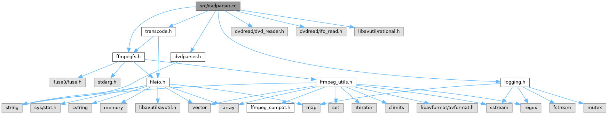

|
FFmpegfs Fuse Multi Media Filesystem 2.19
|
dvdparser class implementation More...
#include "ffmpegfs.h"#include "dvdparser.h"#include "transcode.h"#include "logging.h"#include <dvdread/dvd_reader.h>#include <dvdread/ifo_read.h>#include <libavutil/rational.h>
Go to the source code of this file.
Classes | |
| struct | AUDIO_SETTINGS |
| Audio stream settings. More... | |
| struct | VIDEO_SETTINGS |
| Video stream settings. More... | |
Typedefs | |
| typedef struct AUDIO_SETTINGS | AUDIO_SETTINGS |
| Audio stream settings. | |
| typedef AUDIO_SETTINGS const * | LPCAUDIO_SETTINGS |
| Pointer to const version of AUDIO_SETTINGS. | |
| typedef AUDIO_SETTINGS * | LPAUDIO_SETTINGS |
| Pointer version of AUDIO_SETTINGS. | |
| typedef struct VIDEO_SETTINGS | VIDEO_SETTINGS |
| Video stream settings. | |
| typedef VIDEO_SETTINGS const * | LPCVIDEO_SETTINGS |
| Pointer to const version of VIDEO_SETTINGS. | |
| typedef VIDEO_SETTINGS * | LPVIDEO_SETTINGS |
| Pointer version of VIDEO_SETTINGS. | |
Functions | |
| static int | dvd_find_best_audio_stream (const vtsi_mat_t *vtsi_mat, int *best_channels, int *best_sample_frequency) |
| Locate best matching audio stream. | |
| static AVRational | dvd_frame_rate (const uint8_t *ptr) |
| Get the frame rate of the DVD. Can be 25 fps (PAL) or 29.97 (NTCS). | |
| static int64_t | BCDtime (const dvd_time_t *dvd_time) |
| Convert a time in BCD format into AV_TIMEBASE fractional seconds. | |
| static bool | create_dvd_virtualfile (const ifo_handle_t *vts_file, const std::string &path, const struct stat *statbuf, void *buf, fuse_fill_dir_t filler, bool full_title, int title_idx, int chapter_idx, int angles, int ttnnum, int audio_stream, const AUDIO_SETTINGS &audio_settings, const VIDEO_SETTINGS &video_settings) |
| Create a virtual file for a DVD. | |
| static int | parse_dvd (const std::string &path, const struct stat *statbuf, void *buf, fuse_fill_dir_t filler) |
| Parse DVD directory and get all DVD titles and chapters as virtual files. | |
| int | check_dvd (const std::string &path, void *buf, fuse_fill_dir_t filler) |
| Get number of titles on DVD. | |
dvdparser class implementation
Definition in file dvdparser.cc.
| typedef AUDIO_SETTINGS* LPAUDIO_SETTINGS |
Pointer version of AUDIO_SETTINGS.
Definition at line 53 of file dvdparser.cc.
| typedef AUDIO_SETTINGS const* LPCAUDIO_SETTINGS |
Pointer to const version of AUDIO_SETTINGS.
Definition at line 52 of file dvdparser.cc.
| typedef VIDEO_SETTINGS const* LPCVIDEO_SETTINGS |
Pointer to const version of VIDEO_SETTINGS.
Definition at line 61 of file dvdparser.cc.
| typedef VIDEO_SETTINGS* LPVIDEO_SETTINGS |
Pointer version of VIDEO_SETTINGS.
Definition at line 62 of file dvdparser.cc.
|
static |
Convert a time in BCD format into AV_TIMEBASE fractional seconds.
| [in] | dvd_time | - dvd_time_t object. |
Definition at line 202 of file dvdparser.cc.
References dvd_frame_rate().
Referenced by create_dvd_virtualfile().
| int check_dvd | ( | const std::string & | path, |
| void * | buf = nullptr, |
||
| fuse_fill_dir_t | filler = nullptr |
||
| ) |
Get number of titles on DVD.
| [in] | path | - Path to check |
| [in,out] | buf | - The buffer passed to the readdir() operation. |
| [in,out] | filler | - Function to add an entry in a readdir() operation (see0 |
Definition at line 550 of file dvdparser.cc.
References add_dotdot(), append_sep(), check_path(), load_path(), parse_dvd(), and Logging::trace().
Referenced by ffmpegfs_getattr(), and ffmpegfs_readdir().
|
static |
Create a virtual file for a DVD.
| [in] | vts_file | - Structure defines an IFO file |
| [in] | path | - Path to DVD files. |
| [in] | statbuf | - File status structure of original file. |
| [in,out] | buf | - The buffer passed to the readdir() operation. |
| [in,out] | filler | - Function to add an entry in a readdir() operation (see https://libfuse.github.io/doxygen/fuse_8h.html#a7dd132de66a5cc2add2a4eff5d435660) |
| [in] | full_title | - If true, create virtual file of all title. If false, include single chapter only. |
| [in] | title_idx | - Index of DVD title. |
| [in] | chapter_idx | - Index of DVD chapter. |
| [in] | angles | - Number of angles. |
| [in] | ttnnum | - DVD title number. |
| [in] | audio_stream | - Audio stream index. |
| [in] | audio_settings | - Audio stream settings. |
| [in] | video_settings | - Video stream settings. |
Definition at line 242 of file dvdparser.cc.
References add_fuse_entry(), BCDtime(), BITRATE, Logging::debug(), DVD, dvd_frame_rate(), Logging::error(), ffmpeg_format, format_bitrate(), format_duration(), format_size(), insert_dir(), insert_file(), VIRTUALFILE::DVD_CHAPTER::m_angle_no, AUDIO_SETTINGS::m_audio_bit_rate, AUDIO_SETTINGS::m_channels, VIRTUALFILE::m_channels, VIRTUALFILE::DVD_CHAPTER::m_chapter_no, VIRTUALFILE::m_destfile, VIRTUALFILE::m_duration, VIRTUALFILE::m_dvd, VIRTUALFILE::m_format_idx, VIRTUALFILE::m_framerate, VIRTUALFILE::m_full_title, VIDEO_SETTINGS::m_height, VIRTUALFILE::m_height, FFMPEGFS_PARAMS::m_min_dvd_chapter_duration, VIRTUALFILE::m_predicted_size, AUDIO_SETTINGS::m_sample_rate, VIRTUALFILE::m_sample_rate, VIRTUALFILE::m_st, VIRTUALFILE::DVD_CHAPTER::m_title_no, VIDEO_SETTINGS::m_video_bit_rate, VIRTUALFILE::m_video_frame_count, VIDEO_SETTINGS::m_width, VIRTUALFILE::m_width, params, replace_all(), strsprintf(), Logging::trace(), transcoder_cached_filesize(), and transcoder_set_filesize().
Referenced by parse_dvd().
|
static |
Locate best matching audio stream.
| [in] | vtsi_mat | - Video Title Set Information (VTSI) |
| [out] | best_channels | - Number of channels in best stream. |
| [out] | best_sample_frequency | - Sample frequency in best stream. |
Definition at line 77 of file dvdparser.cc.
Referenced by parse_dvd().
|
static |
Get the frame rate of the DVD. Can be 25 fps (PAL) or 29.97 (NTCS).
| [in] | ptr | - Pointer to frame_u element in dvd_time_t structure. |
Definition at line 167 of file dvdparser.cc.
Referenced by BCDtime(), and create_dvd_virtualfile().
|
static |
Parse DVD directory and get all DVD titles and chapters as virtual files.
| [in] | path | - Path to check. |
| [in] | statbuf | - File status structure of original file. |
| [in,out] | buf | - The buffer passed to the readdir() operation. |
| [in,out] | filler | - Function to add an entry in a readdir() operation (see https://libfuse.github.io/doxygen/fuse_8h.html#a7dd132de66a5cc2add2a4eff5d435660) |
Definition at line 425 of file dvdparser.cc.
References create_dvd_virtualfile(), Logging::debug(), dvd_find_best_audio_stream(), Logging::error(), AUDIO_SETTINGS::m_audio_bit_rate, AUDIO_SETTINGS::m_channels, VIDEO_SETTINGS::m_height, AUDIO_SETTINGS::m_sample_rate, VIDEO_SETTINGS::m_video_bit_rate, VIDEO_SETTINGS::m_width, Logging::trace(), and Logging::warning().
Referenced by check_dvd().